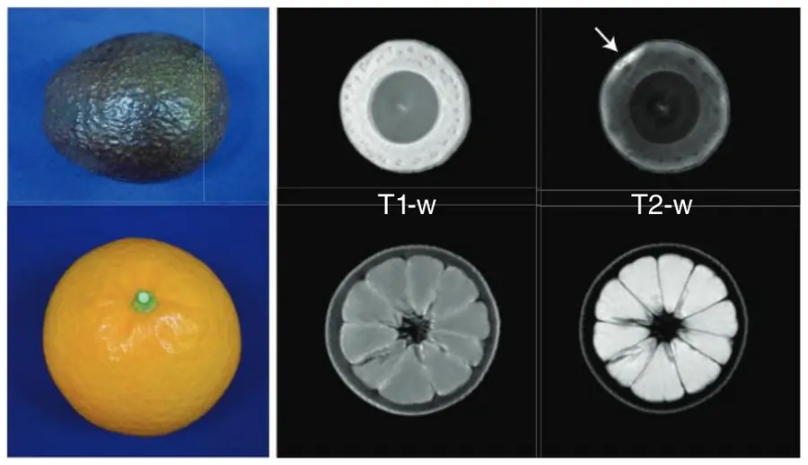
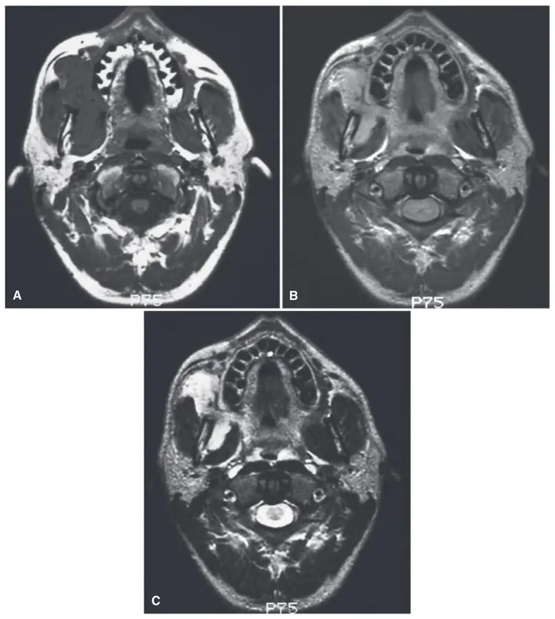

نسخه استخراجشده؛ ترجمه یا تأیید علمی انجام نشده است. وضعیت: captured
کنتراست تصویر MR به چهار چیز بستگی دارد: زمان آسایش T1، زمان آسایش T2، تحرک و شمار پروتونهای بافت، و انتشارشان. و بسته به اینکه کدام پارامتر برجسته شود، تصاویر T1-وزنی، T2-وزنی، چگالی پروتون-وزنی، یا انتشار-وزنی (DWI) نامیده میشوند.

و دو پارامتر در دست اپراتور، وزندهی را تعیین میکنند: TR (فاصلهی میان پالسهای ۹۰ درجهی تکرارشونده) و TE (زمان اکو).
و منطقش با یک نگاه به فرمول روشن میشود: «توجه کن که TR و TE در صورت و T1 و T2 در مخرجاند.» پس:
پس تصویر T1-وزنی = ترکیب TR کوتاه و TE کوتاه. و در آن: «بافتهای با T1 کوتاه سیگنال قوی و بافتهای با T1 بلند سیگنال ضعیف میدهند.» و نمونهی کلاسیک بافت با T1 کوتاه: بافت چربی — چربی زیرجلدی.
و روش اکوی سریع اسپین (FSE) یک تفاوت مهم با SE دارد: «در تصاویر T2-وزنی FSE، چربی سیگنال پرشدت میدهد، در حالی که در تصاویر T2-وزنی SE، تنها آب سیگنال بالا دارد.»
و همین مسئلهای میسازد که سرکوب چربی آن را حل میکند: «شدت سیگنال بالای چربی میتواند جزئیات را بپوشاند.» و کاربردهای ماگزیلوفاسیالش: «کشف و توصیف تومورها، MRI پس از تزریق حاجب، ارزیابی اربیت و عصب اپتیک، و ارزیابی غدهی پاروتید.»
و سه روش اصلی سرکوب چربی:
مادهی حاجب MRI: محلول آبی کیلات گادولینیوم، داخل وریدی. سازوکارش: «گادولینیوم پارامغناطیس است و زمانهای آسایش T1 بافتها را کوتاه میکند، پس سیگنالهای روشنتری در تصاویر T1-وزنی میسازد.»

و کجا جمع میشود؟ «در بافتهای با عروقرسانی افزایشیافته.» بافتهای طبیعی پرعروق — شاخکهای بینی، مخاط سینوس، و لوزهها — حاجب میگیرند و روشن میشوند. و بافتهای بیمار: «تومورهای بدخیم و التهابها پس از حاجب تقویت میشوند، که تفکیک بهتر از بافت طبیعی اطراف را ممکن میکند.»
و پنج مزیت MRI:
و چهار محدودیت: زمان طولانی تصویربرداری (محدودکننده در بیمارانی که نمیتوانند بیحرکت بمانند)، کلاستروفوبیا (گانتری فضای بستهای است)، مواد فرومغناطیس در بدن بیمار، و دستگاههای الکترونیکی کاشتهشده.
و دربارهی مواد فرومغناطیس: «میدانهای مغناطیسی قوی میتوانند این اجسام را جابهجا کنند، گرمای بیش از حد ایجاد کنند، یا جریانهای الکتریکی قوی القا نمایند» — شامل اجسام خارجی آهنی مانند ترکش یا گلوله. و «MRI در بیماران با ضربانساز قلبی و برخی کلیپهای آنوریسم مغزی منع مصرف دارد».
و حالا نکتهی مرکزی برای دندانپزشک —آرتیفکت حساسیت مغناطیسی: «فلزات ترمیمهای دندانی با میدان خارجی جابهجا نمیشوند. ولی حضورشان میدان مغناطیسی موضعی را تغییر میدهد و در نتیجه فرکانس لارمور پروتونهای مجاور را عوض میکند، که آن پروتونها را نسبت به پالسهای RF بیپاسخ میسازد. این یک حفرهی سیگنال در آن ناحیه میآفریند.»
و قاعدههای عملیاش: «وسایل دندانی متحرک باید پیش از اسکن برداشته شوند.»، «سیمهای ارتودنسی حاوی فولاد زنگنزن آرتیفکتهای گستردهای میسازند، شامل حفرهی سیگنال و اعوجاج تصویر.»، و رتبهبندی مواد: «فولاد زنگنزن آرتیفکت بیشتری از آلیاژهای کروم-کبالت یا سیمهای نیکل-تیتانیوم میسازد.»، پس «وقتی فکها ناحیهی اصلی مورد نظراند، ممکن است لازم باشد سیمهای ارتودنسی برداشته شوند».
و ایمنی MRI — چهار موضوع:
و در TMJ: MRI استاندارد طلایی تعیین موقعیت و پیکربندی دیسک آرتیکولار است، و افیوژن مفصلی روی تصاویر T2-وزنی دیده میشود.